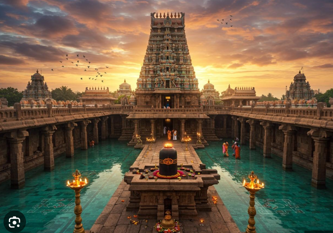
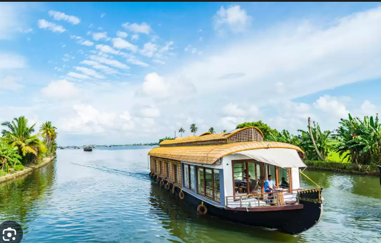
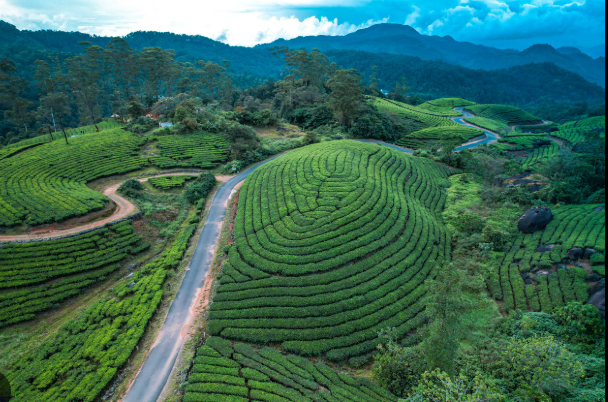
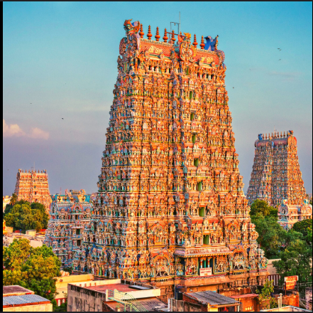
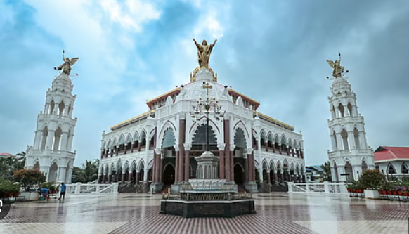

Travel-Experiences
Athirapilly Falls

For the most unforgettable experience, visit Athirapilly Falls post-monsoon, typically September to January. The Chalakudy River is robustly swollen, showcasing the waterfall's maximum power and justifying its nickname, the "Niagara of India." This time offers full water flow, intensely verdant Sholayar rainforest scenery, and pleasant weather, making the trip truly rewarding.
Rameswaram Temple
Rameswaram offers a profoundly spiritual experience, beginning with a walk through its stunning, mile-long corridors (praharams), which are renowned as the longest in the world. The journey culminates in a sacred bath in the 22 theerthams (holy wells) within the temple complex, believed to cleanse one's sins and complete the pilgrimage. Witnessing the massive, intricately carved architecture dedicated to Lord Shiva, and feeling the powerful faith of countless pilgrims, makes the visit an incredibly unique and humbling occasion.
Alleppey Lake
For a truly sweet and lovable journey, visit the Alleppey backwaters between November and February. This provides the best weather—cool and clear—perfectly suited for a romantic houseboat cruise across the serene Vembanad Lake. This ideal season ensures your trip through the tranquil channels, past lush green fields, is a wonderfully peaceful and cherished Keralan memory.
Munnar
Munnar is most special for its emerald-green rolling tea plantations which carpet the hills for a sweet and unending vista. Adding to this lovable charm is the Eravikulam National Park, home to the endangered Nilgiri Tahr and the breathtaking, once-in-12-years blooming of the rare Neelakurinji flowers, creating a truly magnificent, ethereal blue landscape.
Madurai
The visit to the Madurai Meenakshi Temple is awe-inspiring, dominated by its towering, colorful gopurams adorned with thousands of carvings. Inside, the spiritual atmosphere is intense, particularly around the tranquil Golden Lotus Tank and the architectural marvel of the Hall of a Thousand Pillars. This temple embodies the vibrant artistry and profound devotion at the heart of Tamil Nadu.
Kochi
Discover the unique charm of Kochi's history in Fort Kochi, ideally visited during the pleasant winter months (October to March). This provides perfect weather to explore the narrow streets where the iconic Chinese Fishing Nets create a spectacular sunset scene, perfectly complementing the colorful, centuries-old tapestry of Portuguese and Dutch colonial architecture.
Essential Things to Carry
Do not Forget -the Survival things
- Money
- ID proves for hotel booking and passport
- Lightweight clothes
- Comfortable Footwear
- Umbrella
- Hat/sunglass
Good to Carry
- Camera-For capturing the best memories
- Torch and adapter
- Water bottle & some light foods
- A scarf - for women to follow strict temple's rule
- Towels - for beach areas
- Sunscreen
Avoid to Carry
- Heavy Clothes
- High Heels
- Too many Toiletries - sampoo , soap etc.
Destination-List
| Date | Places | Activities |
|---|---|---|
| 4th-Nov | Kochi | Witness the Chinese Fishing Nets, Explore St. Francis Church and the Dutch Palace, Visit the Paradesi Synagogue and local museums in Fort Kochi/Mattancherry. |
| 5th-Nov | Munnar | Explore the tea plantations and visit the Tea Museum, Take a safari/trek in Eravikulam National Park to spot the Nilgiri Tahr, Enjoy the scenic views from Mattupetty Dam and Echo Point. |
| 6th-Nov | Thekkedy | Periyar Tiger Reserve: Take a morning boat cruise on Periyar Lake to spot wildlife like elephants and bison along the water's edge. In the afternoon, tour a local spice plantation and finish the day with a Kalaripayattu (martial arts) or Kathakali (classical dance) performance. |
| 7th-Nov | Alleppey | Take an overnight Houseboat Cruise on the Backwaters for the complete experience; alternatively, enjoy a smaller Shikara ride to navigate the narrow canals. Relax on the beach and visit the historic Alappuzha Lighthouse also enjoy ayurveda massage. |
| 8th-Nov | Varkala | Spend the day on the Varkala Cliff and Papanasam Beach: Enjoy café hopping and shopping atop the cliff, witness a dramatic sunset, try water sports (surfing/paragliding), and visit the ancient Janardhana Swamy Temple for a spiritual touch. |
| 9th-Nov | Kanyakumari | Experience the unique Triveni Sangam by watching the spectacular sunrise where three seas (Bay of Bengal, Arabian Sea, Indian Ocean) meet. Take the ferry to the iconic Vivekananda Rock Memorial and the towering Thiruvalluvar Statue for historical significance and panoramic views. |
| 10th-Nov | Rameswaram | Complete the pilgrimage at the Ramanathaswamy Temple by bathing in the 22 theerthams (holy wells) and walking through the temple's famous, longest-in-the-world corridors (praharams). Also, visit Dhanushkodi (Ghost Town) for its history and scenic coastal views. |
| 11th-Nov | Madurai | Visit the magnificent Meenakshi Amman Temple to see its towering, colorful gopurams and the Hall of a Thousand Pillars. Explore the stunning Indo-Saracenic architecture of the Thirumalai Nayak Palace, and delve into history at the Gandhi Memorial Museum. |
Essential Resources
We want your journey to be as smooth as ours! Here are the essential links for planning your logistics, including the exact places we recommend.
MAPs And Navigations
Google MapsTickets and Transport
IxigoHotel booking
Make my TripFacing Any Troubble or Confusion?
If you run into any confusion about the exact locations, nearer hotel booking, permits, local holidays, or specific temple timings, these are the sites that helped us:
Registration
Join a community or a family rather than just by hitting only a button.
Some Life-lessons:
“Traveling – it leaves you speechless, then turns you into a storyteller.”